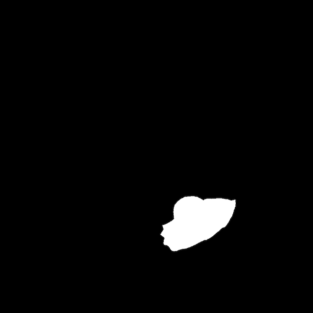

Baseline Analysis: SAM's Response to Anomaly Prompts
Prior to fine-tuning, we evaluated SAM's zero-shot segmentation performance on industrial anomaly datasets to analyze its failure modes and performance boundaries. We uniformly sampled 210 test images from 14 distinct anomaly categories, with 10 to 15 representative instances per category, ensuring broad coverage across variations in defect shape, texture, and scale.
We tested three prompt configurations: (1) Single positive point at the center of the defect, (2) Positive + Negative points to guide the model, and (3) Bounding box enclosing the target anomaly.
Representative Results
Our analysis revealed four typical outcome patterns:
Case 1: Correct Segmentation, Aligned Confidence
Image

Mask 1
Ground Truth
Mask 2
Mask 3
In this example, SAM successfully produces a mask that closely matches the ground truth in both shape and location. Additionally, the mask with the highest confidence score corresponds to the best segmentation, indicating a strong alignment between model prediction and human judgment.
Case 2: Correct Segmentation, Misaligned Confidence
Image
Mask 1
Ground Truth
Mask 2
Mask 3
In this case, SAM generates a reasonably accurate mask but assigns a higher confidence to a suboptimal one. This discrepancy suggests a misalignment between the model's internal scoring and human perception of quality, which might hinder downstream automation systems that rely on score-based mask selection.
Case 3: Partial Failure due to Semantic Misunderstanding
Image
Mask 1
Ground Truth
Mask 2
Mask 3
SAM sometimes segments entire object structures rather than focusing on the anomalous regions. Here, when tasked with segmenting a defect on a wire, SAM includes the inner cavity of the wire as part of the predicted mask. While the mask is spatially consistent, it reflects a lack of semantic understanding of what constitutes a defect.
Case 4: Failure with Subtle Defects
Image
Mask 1
Ground Truth
Mask 2
Mask 3
In this example, SAM fails to produce any meaningful segmentation for a subtle anomaly in a carpet. The deformation is barely perceptible even to human observers, highlighting SAM's limitations when dealing with low-contrast defects in textured surfaces.
Across all experiments, we observed that SAM often segments entire objects rather than focusing on local defects, suggesting it lacks an explicit notion of "anomaly." Point-based prompts, especially those combining positive and negative clicks, generally led to better results than bounding boxes, likely due to the finer spatial guidance they provide. These findings confirm our hypothesis that while SAM excels at general object segmentation, it struggles with industrial anomaly detection due to lacking domain-specific understanding.